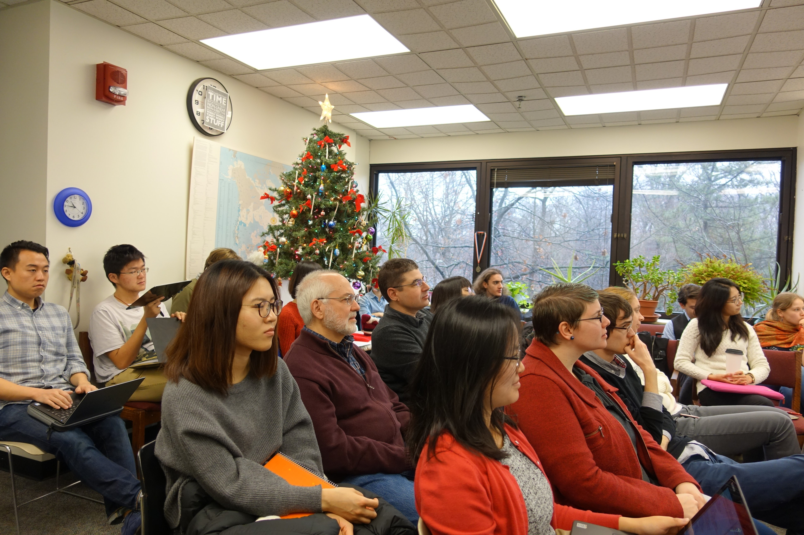

Computational Phonology Workshop
As part of the Computational Phonology class (LIN 626) we hosted an end-of-semester workshop on December 12, 2016. This was a great opportunity for students to present their computational research, and many of the projects have since been presented at prominent conferences (e.g. CLS 53). We also had an invited talk by Adam Jardine. For pictures and more information, please see the workshop website.
